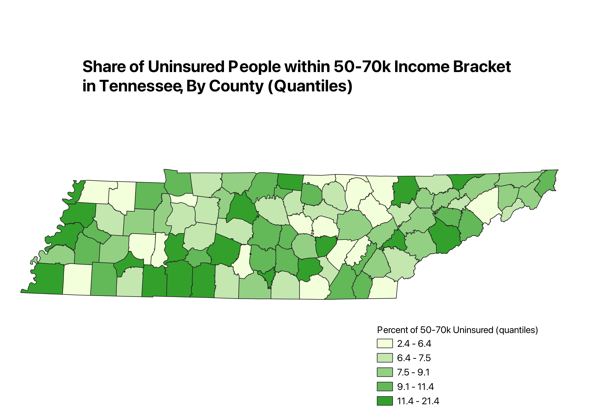
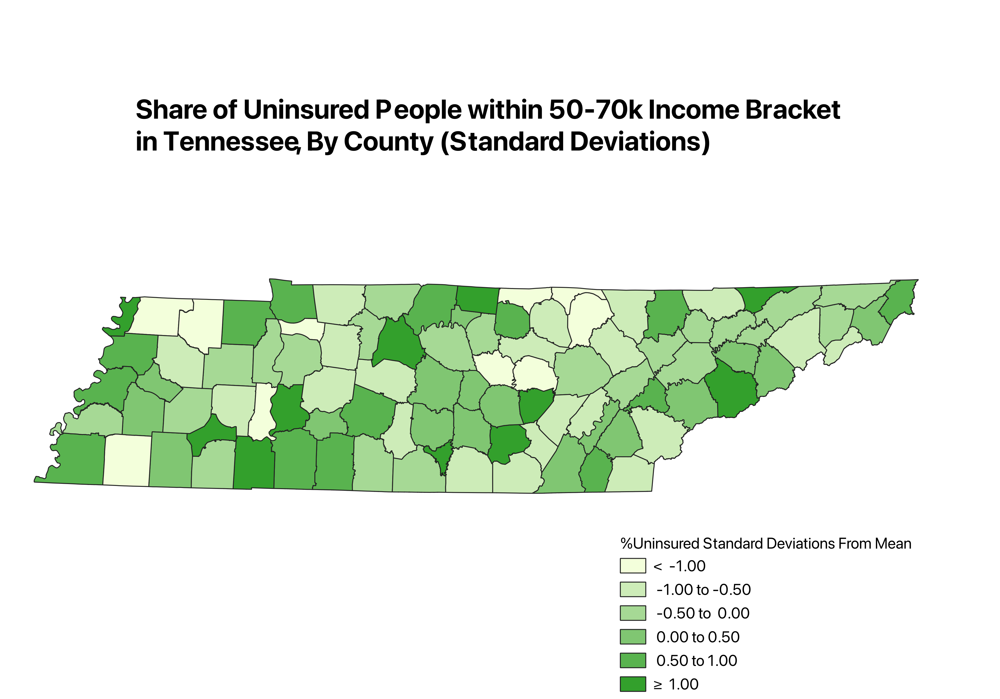
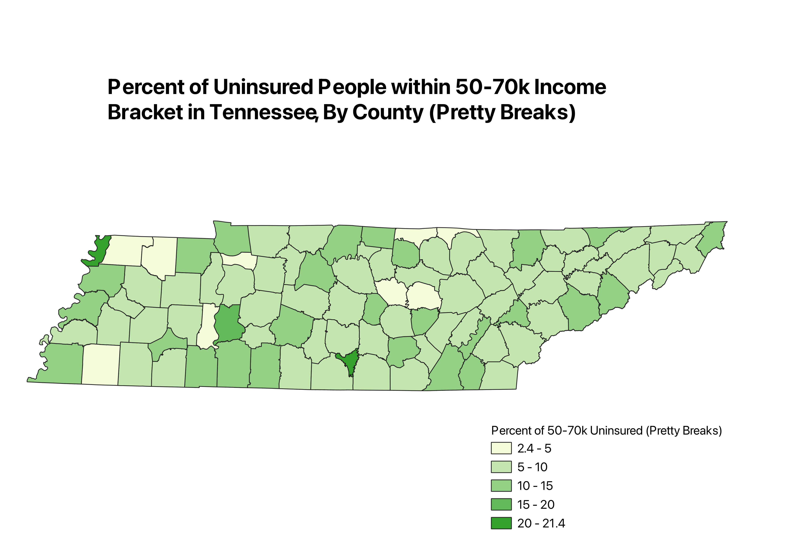

homework 6 part 2
Jose Guevara Hernandez
Ratio Chosen
The ratio I choose is the ratio of uninsured people in the given income brack to total number of people
in said income bracket. I chose this because it does a good job of explaining the information I want to get across,
that is, of the people in this income bracket, how many are uninsured. This also helps standardize for population size so that the results
are more significant.
Map 1

The mode used to categorize the data for this map was Equal Count (Quantile).
Here, the data is sorted into 5 bins of equal size, so that the values
that fall into the bottom quintile of the data are in one bin, and so on
until the percent values that fall into the top quintile are in the highest bin.
A pro of this mode is that the data is evenly distributed and easy to understand.
For instance, one can look at the map and see that a given county is in the top
20% for uninsurement rates. A con of this mode is that it does not represent outliers very well, as
they are classified along with the highest or lowest percentile.
Map 2

The mode used to categorize the data for this map was standard deviation. This was an
interesting way to classify the data. Here, the values are sorted by
how far away they are from the mean. A con of this mode is that it is a little
less intuitive, but a pro is that it represents outliers very well.
Map 3

The mode used to categorize the data for this map was Pretty Breaks, a feature from
QGIS. A pro of this mode is that the intervals are intuitive and appealing. A con is that
you can't see the difference between counties as well.
Data used for this project
CSV dataset
Link to GeoJSON
return home